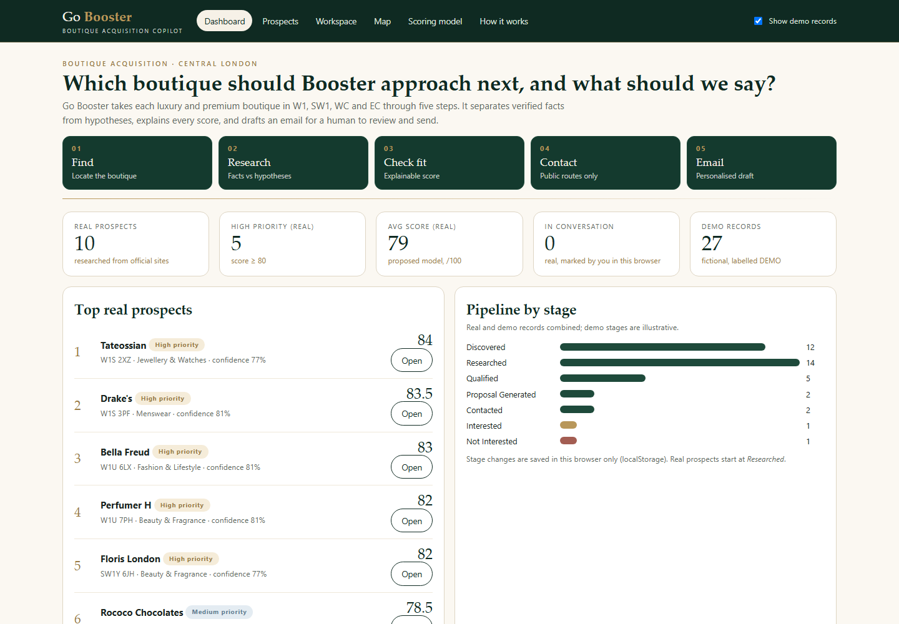
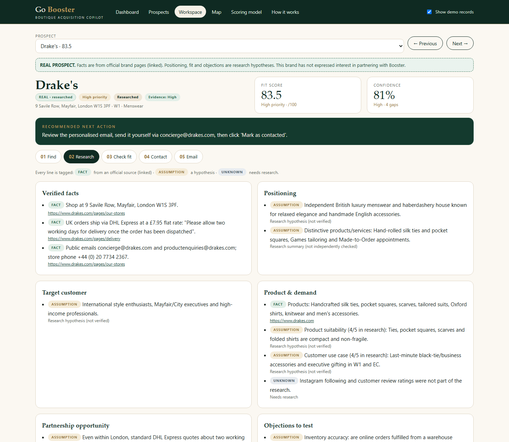
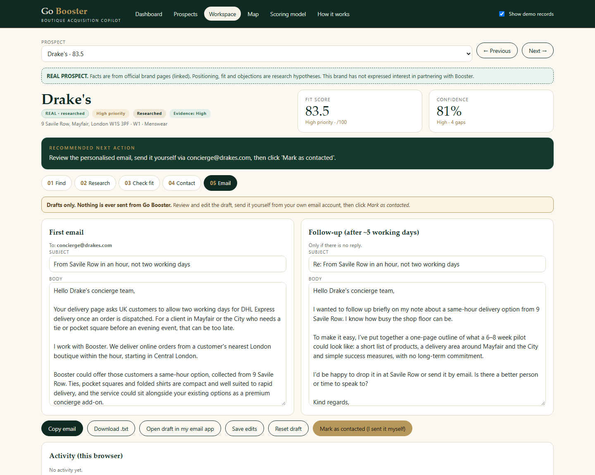

The boutique acquisition & outreach copilot.
Find the right boutiques in Central London, know why they fit, and say something worth replying to.
Today, each prospect is a manual project
What goes wrong
Search and filter boutiques in W1, SW1, WC and EC. Real and demo records are always labelled.
Verified facts with source links, kept apart from hypotheses and unknowns.
A 100-point score with a reason, confidence level and missing data for every criterion.
Only public, official contact routes. No guessed names or emails.
A personalised first email and follow-up built on verified facts, sent by a human.
A single self-contained web page. It works offline in Chrome and Edge, with no server and no API key.

Find: ranked real prospects and the five-step flow

Research: every fact linked to its official source

Email: a personalised draft; nothing is sent automatically
Proposed weights, adjustable live in the app. Priority: High ≥ 80 · Medium 60–79 · Low < 60.
FACT from an official page, with the link
ASSUMPTION a hypothesis to test in discovery
UNKNOWN missing data lowers confidence and is never guessed
Example: Drake's scores 83.5/100 at 81% confidence. Unknowns include Instagram reach, reviews and a named decision-maker. The research's own rubric (20/25) is shown next to it, and disagreements are visible rather than hidden.
Prioritise with reasons. One transparent score across every boutique, so the team agrees on who to approach first.
Outreach that is specific. Each email opens with the boutique's own published policy, such as a two-day delivery wait or a phone-only same-day service.
Research once, reuse. Facts, sources, contact routes and objections stay in one place for the whole team.
EXPECTED BENEFITS ARE HYPOTHESES TO VALIDATE IN A PILOT. NO TIME SAVINGS, CONVERSION RATES OR PARTNERSHIPS HAVE BEEN MEASURED OR CLAIMED.
In this build: 10 real prospects researched from official websites · 27 fictional demo records (labelled) · 190 views tested with 0 errors.
A research agent that fetches official pages and cites every fact.
Automatic re-verification and a date on every fact.
Shared pipeline, assignment, audit trail and login.
Calibrate scoring on real outcomes; integrate with Booster's email tools, keeping human approval.
Go Booster helps Booster win the right boutiques with outreach that is specific, honest and human-approved.